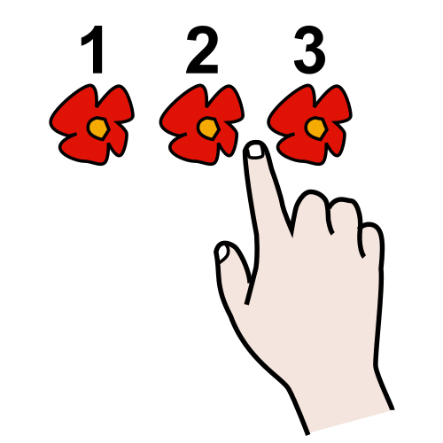

Crea tu REA para el Proyecto REA Andalucía
3.3.1 Toma de decisiones
Selecciona cuál va a ser el objetivo u objetivos didácticos de tu REA.
- Es el qué vas a enseñar.
- Es uno de los elementos que van a dar sentido a tu REA y condicionará el resto del diseño.
- Para seleccionarlo sírvete del currículo vigente o del marco de referencia de tu organización.
- Elige un objetivo u objetivos acordes al perfil de las personas a las que va dirigido tu REA.
Objetivo del REA
"Aprender a hacer una tortilla de patatas"
Objetivo del REA
MAT.01.04. "Interpretar y expresar el valor de los números en textos numéricos de la vida cotidiana y formular preguntas y problemas sencillos sobre cantidades pequeñas de objetos y hechos o situaciones en los que se precise contar, leer, escribir, comparar y ordenar números de hasta tres cifras, indicando el valor de posición de cada una de ellas".
Define con precisión el objetivo y descompón en pasos el proceso de aprendizaje que implica.
- Descompón el proceso de aprendizaje que implica el objetivo didáctico de tu REA en varios pasos. Esto favorecerá que tu alumnado pueda alcanzarlo.
Estos pasos serán los que se sigan para aprender progresivamente, por tanto van a condicionar el posterior diseño de explicaciones, ejercicios, actividades, tareas y resto de recursos.
- Sigue una secuencia coherente con la construcción de la comprensión y acorde al saber del área/materia para la que estés diseñando.
- Invierte el tiempo necesario en definir esta secuencia porque es muy importante, ya que te permitirá reducir la carga cognitiva. Esto hará que tu REA pueda ser mejor comprendido.
1. "Aprender a hacer una tortilla de patatas"
1.1. Saber qué es una tortilla de patatas.
1.2. Comprar los ingredientes necesarios.
1.3. Preparar los utensilios necesarios.
1.4. Pelar las patatas y cortarlas muy finas.
1.6. Enjuagar y añadir sal.
1.7. Freírlas.
...
1. "Interpretar y expresar el valor de ..."
1.1. Leer números de hasta tres cifras.
1.2. Escribir números de hasta tres cifras.
1.3. Ordena números de hasta tres cifras.
1.4. Descomponer números de hasta tres cifras.
1.5. Componer números de hasta tres cifras.
1.6. Redondear números de hasta tres cifras.
...
Resalta la relevancia de las metas que se pueden conseguir con tu REA.
-
Ten claro qué fin contribuye a alcanzar el objetivo que has seleccionado.
- Puedes encontrar esta correspondencia con los objetivos generales de la etapa.
¿Por qué es importante este REA?
Aprender a hacer una tortilla de patatas te da la posibilidad de conocer cómo elaborar un plato típico de nuestra gastronomía y contribuye a conocer y apreciar los elementos específicos de nuestra cultura para que sea valorada y respetada.
¿Por qué es importante este REA?
Interpretar y expresa el valor de los números contribuye a desarrollar las competencias matemáticas básicas e iniciarse en la resolución de problemas que requieran la realización de operaciones elementales de cálculo, así como ser capaces de aplicarlos a las situaciones de su vida cotidiana.
Decide quiénes van a ser las personas destinatarias de tu REA.
- Decide la etapa y enseñanzas para la que vas a diseñar (Infantil, Primaria, Secundaria, FBO, Régimen Especial, Adultos, Formación Profesional,...). Entre otras cosas, esto determina el tipo de estilo de eXeLearning que vas a usar (EducaAnd Estilo Escolar o Adultos).
- Describe o ten previsto los posibles escenarios en los que vas a emplearlo (presencial, semipresencial, a distancia).
- Y además ten en cuenta que el REA ha de dar respuesta a la diversidad, es decir, debe posibilitar el acceso al aprendizaje de todas las personas a las que vayas a ofrecerlo. Has de pensar previamente en las características de tu grupo y el rango de competencia curricular que has de abarcar.
Personas destinatarias
Etapa: Primaria
Ciclo: 1º
Modalidad: presencial/semipresencial/a distancia
Características del grupo: alumnado de entre 5 y 8 años con nivel de competencia curricular que oscila entre 2º Ciclo de Educación Infantil y 2º Ciclo de Educación Primaria.
Piensa y describe qué competencias se pueden desarrollar con tu REA.
- Recuerda que actualmente las competencias clave vienen definidas por la Orden ECD/65/2015, de 21 de enero, por la que se describen las relaciones entre las competencias, los contenidos y los criterios de evaluación de la educación primaria, la educación secundaria obligatoria y el bachillerato.
- Puedes servirte de su descripción para pensar la forma en la que tu REA contribuye a desarrollar cada una de estas competencias. También puedes usar el marco competencial con el que trabaje tu organización.
Contribución a las competencias
Competencia en Comunicación Lingüística: adquirir vocabulario específico sobre gastronomía y comprender texto instruccional (receta de cocina).
Competencia Matemática y Competencias básicas en Ciencia y Tecnología: usar datos para medir cantidades y utilizar electrodomésticos (freidora, vitrocerámica,...).
Competencia Digital: crear contenido digital para promocionar el plato elaborado.
Competencia para Aprender a Aprender: emplear estrategias de planificación (lista de la compra) y organizadores espacio-temporales (reloj de cocina).
Sentido de la Iniciativa y Espíritu Emprendedor: adaptarse a los imprevistos que puedan surgir durante la elaboración y evaluar los resultados para poner en marcha un nuevo plan de acción.
Conciencia y Expresiones Culturales: conocer y valorar la herencia gastronómica de la tortilla de patatas.
Competencias Sociales y Cívicas: interesarse por conocer diferentes variantes de la receta y fomentar en el contexto local su promoción.
Piensa qué relación tiene tu REA y el objetivo que has planteado con los diferentes elementos del currículo en vigor.
- Recuerda que si no existe un currículo en vigor puedes tomar como referencia el marco usado por tu organización.
Relación con el currículo
Objetivo: MAT.01.04. Interpretar y expresar el valor de los números en textos numéricos de la vida cotidiana y formular preguntas y problemas sencillos sobre cantidades pequeñas de objetos y hechos o situaciones en los que se precise contar, leer, escribir, comparar y ordenar números de hasta tres cifras, indicando el valor de posición de cada una de ellas.
Contenido: Bloque 2. Números.
Estándar de Aprendizaje: MAT.01.04.01. Lee, escribe y ordena números en textos numéricos y de la vida cotidiana utilizando razonamientos apropiados e interpretando el valor de posición de cada una de sus cifras.
Establece qué usos didácticos se le puede dar a tu REA.
- Describe cómo puede usarlo el alumnado.
- Describe cómo puede usarlo el profesorado.
Cómo puede usarse el REA
Usos para el profesorado: como material principal para la enseñanza presencial, semipresencial o a distancia.
Usos para el alumnado: como material para la autoformación y como material principal para la enseñanza presencial, semipresencial o a distancia.
Determina el tiempo aproximado de trabajo que el alumnado ha de invertir para alcanzar la meta/objetivo de aprendizaje.
- Haz un cálculo aproximado de las horas que han de invertirse para usar todos los elementos del REA.
- Para facilitar este cálculo puedes hacer una indicación de tiempo de realización de cada una de las actividades o tiempos de uso de cada recurso.
- Diseña teniendo en cuenta el total de horas lectivas semanales del área/materia asignadas con carácter general en la normativa que desarrolla el currículo.
Temporalización
Visualización de la portada y del apartado "Para qué sirve este REA": 30 minutos.
Apartado "Para comenzar": 30 minutos.
Apartado "Para aprender": 120 minutos.
Apartado "Para practicar": 180 minutos.
Apartado "Para comprobar cuánto has aprendido": 60 minutos.
Apartado "Para crear": 180 minutos.
Total: 600 minutos (10 horas).
Piensa y aclara qué habilidades/conocimientos ha de poseer el alumnado para poder usar tu REA.
- Consulta la secuencia de trabajo que establece el saber del área/materia de tu REA para conocer qué habilidades y conocimientos son requeridos para poder usarlo.
- Puedes ayudarte del currículo de la etapa localizando en él los objetivos descritos en niveles inmediatamente anteriores al que has seleccionado.
- En el caso de que tu REA forme parte de un conjunto de recursos, localiza qué recurso puede ser usado antes o después del tuyo.
Conocimientos previos
Secuencia de la didáctica de las matemáticas: Saber la secuencia numérica verbal y conocer la correspondencia 1 a 1, el orden estable, la cardinalidad, la abstracción y el orden irrelevante para el conteo.
Objetivo de nivel anterior: Segundo ciclo de Educación Infantil "Saber relacionar, ordenar, cuantificar y clasificar elementos y colecciones en base a sus atributos y cualidades".
REA que lo precede: REA_01.01.01.MAT
Obra publicada con Licencia Creative Commons Reconocimiento No comercial Compartir igual 4.0